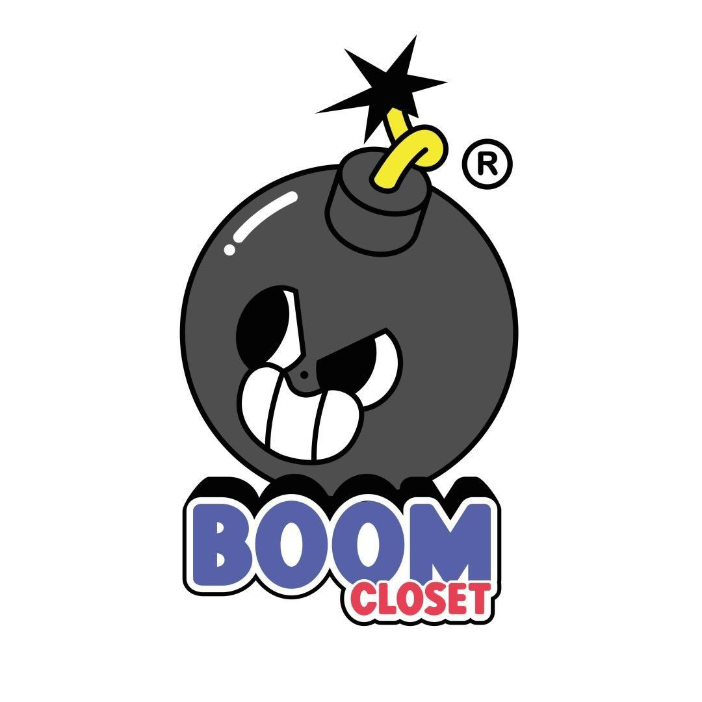

En Costa Rica, existen varias tiendas de ropa vintage bien conocidas, especialmente en áreas urbanas donde la moda sostenible ha ganado popularidad. Sin embargo, la mayoría de las tiendas de este estilo se manejan de manera virtual, principalmente a través de Instagram, donde los emprendedores encuentran un espacio ideal para ofrecer sus prendas de manera rápida y personalizada. Esto ha llevado a que haya una mayor cantidad de tiendas vintage en línea que tiendas físicas, aprovechando las redes sociales para conectar con sus clientes de manera eficiente.
Algunos ejemplos de tiendas en costa rica son por ejemplo "Flearoom" y "EnovaVintage" las cuales son las mas conocidas y las que tienen sucursales de forma precencial
Otras tiendas al rededor del mundo famosas destaca sobre todas la llamada "Tempetoes" la cual esta ubicada en estados unidos y es muy famosa gracias a sus articulos tan raros y exclusivos
A continuacion se les dejara una guia la cual recopila las tiendas mas famosas de todo el mundo en cuanto a ropa vintage hablamos
© 2024 Pagina sobre informacion de prendas Vintage. Todos los derechos reservados.